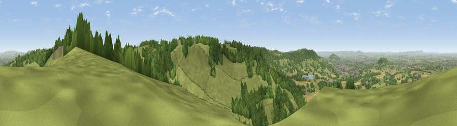

Viewpoint near Witcombe
#4072 in England · top 9% of its area beats it · near WitcombeThe view, rendered

A 360° render of this exact spot computed from the terrain model, tree cover and land cover — summer colours, afternoon light, calibrated against photographs of famous viewpoints. Real trees, hedges and buildings will differ in detail.
The panorama
Grey silhouette: terrain skyline in each direction (720 bearings, Earth curvature and refraction included). Dashed green: skyline with trees (+15 m) and buildings (+8 m) as obstacles. Blue strip: how far the ground is visible on each bearing.
Where the view opens
Wedge length = distance to the farthest visible ground on that bearing (vegetation-aware). Rings at 10, 25 and 50 km.
What fills the view
52% grassland · 38% woodland · 7% cropland · 3% built-up
Angular shares of the visible panorama (visual magnitude), not map area. Landscape diversity 0.44 (0–1 Shannon).
Key numbers
More beautiful places nearby
The staircase of upgrades: each row has a higher view potential than everything closer. Driving times are estimates from straight-line distance, calibrated against real road routing — check an actual route before setting out.
| Place | Direction | Drive | Score |
|---|---|---|---|
| Viewpoint near Shurdington | NNE · 2 km | ~5 min | 73.1 |
| Viewpoint near Leckhampton | NE · 3 km | ~8 min | 77.8 |
| Viewpoint near Great Witcombe | WSW · 4 km | ~9 min | 80.5 |
| Nottingham Hill | NNE · 13 km | ~24 min | 80.9 |
| Viewpoint near Bredon's Norton | N · 24 km | ~39 min | 81.3 |
| Bredon Hill | N · 24 km | ~40 min | 83.0 |
| Millennium Hill | NW · 29 km | ~46 min | 86.9 |
| Worcestershire Beacon | NNW · 33 km | ~51 min | 87.1 |
51.84334, -2.10773 · source: screening · position refined by local search. Computed location — check access rights before visiting.